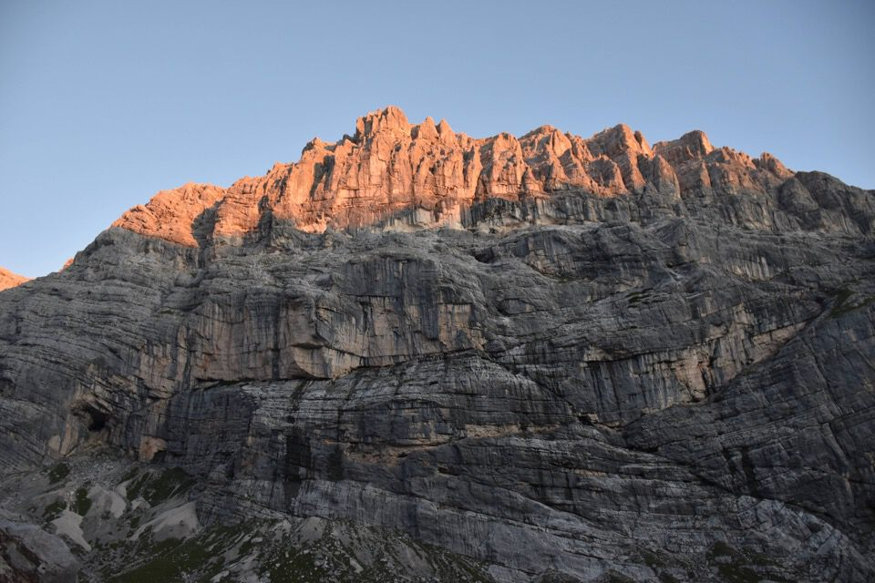
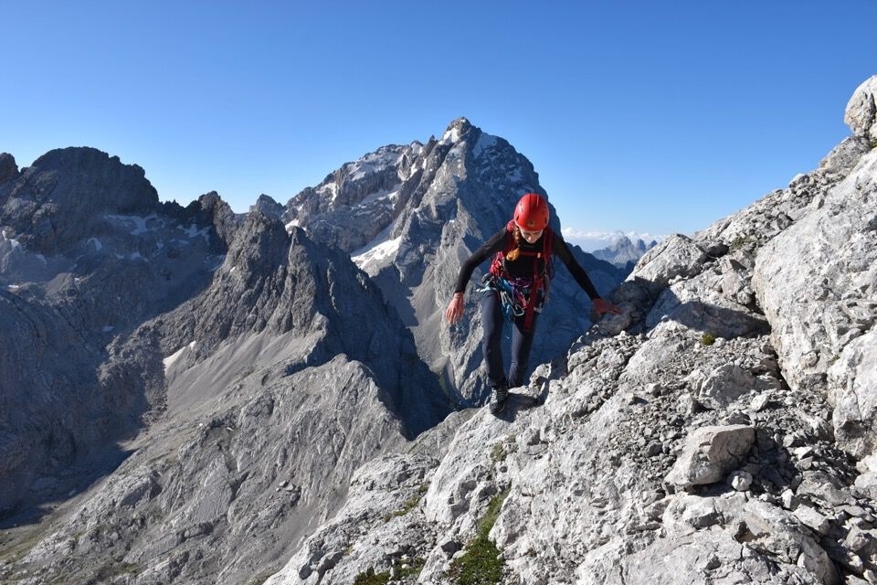
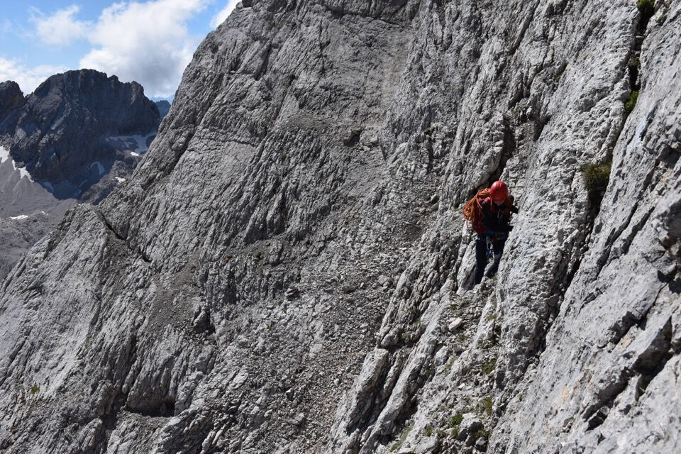
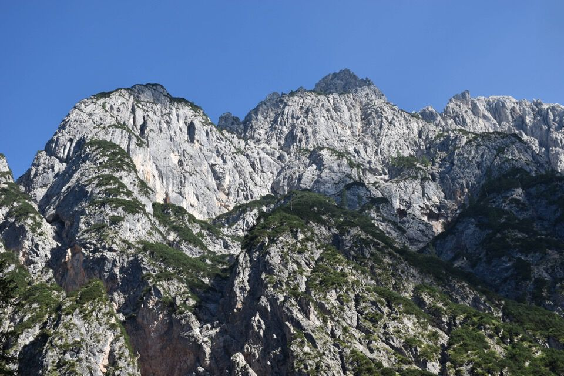
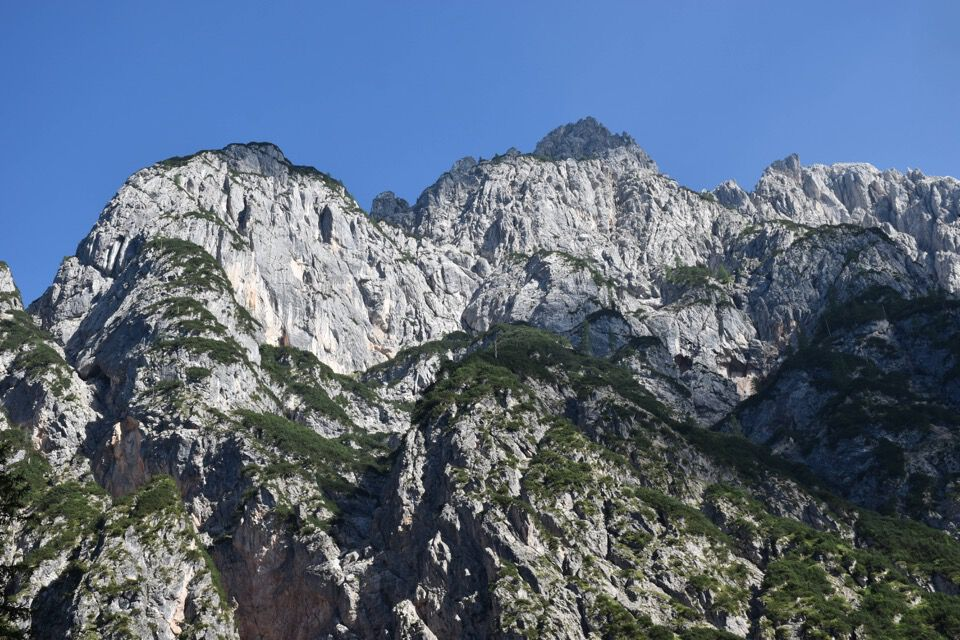

Altre due magnifiche giornata di croda nelle Marmarole, questa volta dormendo al bivacco Voltolina.
Per il primo giorno (Croda de Marchi Nord) clicca qui.
Sulla guida Berti viene spudoratamente riportata questa improbabile relazione:
A) DA V. DI MEZZO. — L. Pitacco e C. Brandolini, g. L. Cesaletti e Zanucco, 4 IX 1881 (Cr. S.A.F. 1881, 94). — Dal Biv. Voltolina salire verso d. (SO) alla base N delle rocce del Bel Pra. Per lastroni e camini lisci ad una cengia marcata, che alta nel monte corre verso SO portando in cima. — 1° gr.; ore 6.
Andando a cercare negli archivi SAF ho trovato l'articolo di Pitacco. Leggiamo cosa dice riguardo alla prima ascensione nel 1880:«Dirò adesso della salita sulla Punta di Bel Prà, la quale, per quanto si sappia, era vergine di piede umano.
Il Monte Bel Prà è situato fra l'Antelao e la Croda Malcora, edè quello che si presenta di fronte, salendo da S. Vito su per il gran tallus che conduce alla Forcella piccola tenendosi a destra, e piegando a sinistra alla Forcella grande. La punta però non è visibile da S. Vito, ma bensì da Borca, e dalla strada nazionale oltre S. Vito presso Cortina di Ampezzo. La salita fu fatta dal mio compagno sig. Brandolini e da me, colle stesse brave guide Cesaletti e Zanucco, il giorno 4 settembre. Trattandosi di una vetta secondaria, quindi per ciò stesso poco seducente, ed in situazione a me nota, non volea cimentarmi a simile impresa, che prevedeva difficile e pericolosa; ma la cima cra inesplorata, ecco la seduzione. Invero la salita è difficile e molto pericolosa.
La guida Cesaletti si espresse che preferiva fare tre volte la salita del M. Cristallo, piuttostochè una sol volta quella di Bel Prà. Io divido la vostra opinione risposi, non perchò sia tanto più difficile, ma perché troppo pericolosa, ed all'opposto assai meno soddisfacente. Pericolosa ed aggiungo assai faticosa fu per noi, perchè per circa 300 metri di altezza presso la cima, abbiamo dovuto farci la strada, sgombrando, con assai fatica e pericolo, i sassi staccati ed i detriti. Alle tre antim. siamo partiti dall'albergo, e solo alle undici e mezza abbiamo toccata la cima.
La via da tenersi è questa, che io indico gratis ai confratelli alpinisti. Dalla Forcella grande si piega subito a destra, e si monta su pei faldoni rocciosi che stanno dietro alla stupenda Torre dei Sabbioni, finchè girando poi a mezzodi, e montando sopra un greppo che si erge a picco di fronte alla Bala dell'Antelao, si torna in vista di S. Vito.
Fin lì nessuna difficoltà; ma da quel punto sino alla cima la salita è cosa seria assai, perchè la roccia si erge a picco, formando una muraglia di mille metri di altezza, e la scalata si fa arrampicandosi su per quella fronte dirupata, per fessure intricatissime, a cominciare da circa 300 metri dalla cima. La cima è conformata ad imbuto, come un piccolo cratere spaccato da un solo lato; le pareti sono sottili, a picco, sgretolate e cadenti. Lassu ci siamo fermati due ore, occupati a lavorare per formare tre piramidi, o, come le dicono, uomini di pietra, delle quali una in vista di Borca, una visibile da Cortina, la terza sul punto culminante, non visibile finchè non si sia arrivati in cima.»
Non capisco, sto prendendo io un abbaglio oppure il Pitacco sta descrivendo — pur in maniera esagaratamente grossolana — la salita per l'«odierna via normale» dalla val di San Vito? Non quindi dalla val di Mezzo come riporta la guida Berti!
Fra l'altro pure le informazioni reperibili su Internet sono alquanto confusionarie. Se non altro ciò stimola la curiosità — perlomeno la mia — e dà il pretesto per spolverare vecchi articoli sui monti.
Inizia una nuova splendida giornata.
Le prime luci sulla Costa Bel Pra.
I verdi prati del Corno del Doge.
Chiaramente mi dimentico di salvare la relazione sul telefono, andiamo in base ai ricordi, ma della freccia indicata nelle relazioni non c'è traccia. Che fare? Quale rampa va presa?
Guardando le foto scattate il giorno prima dalla Croda de Marchi decidiamo di salire per questa facile placconata.
«Vieni che siamo giusti!»
La placconata è più facile di quello che sembra.
Salendo verso il tratto chiave.
In centro la Croda de Marchi salita ieri.
Saliamo il tratto di III assicurandoci, poi scendiamo un po' e attraversiamo il canalone.
(Io credo che sia anche possibile continuare sullo stesso lato dopo il tratto di III, con difficoltà simili, per entrare nel canalone più in alto, senza attaversarlo. Dalle foto mi sembra che il canalone finale non abbia salti insormontabili, ed esso termina alla forcelletta fra la cima e l'antecima Sud, da cui sperabilmente si dovrebbe giungere in cima senza grosse difficoltà. Vedi qui.)
Penso che traversare direttamente sia più difficile, anche se non c'è alcuna sosta già pronta dove siamo saliti noi.
Vabbè, ora via su che ancora non è finita.
Puntando verso il cielo.
La via è un continuo zig-zag alla ricerca dei punti più facili.
La paretina finale, dai che sbuchiamo dritti in vetta!
I tetti di San Vito imbiancati dalla frana della Croda Marcora!
Il Pelmo, salito due anni fa in una magnifica giornata autunnale.
Cresta dei Bastioni.
Con lo zero termico a 5200m praticamente ci stiamo cuocendo qui in cima, inoltre ancora non sapevamo cosa ci aspettasse in discesa!
Passaggi impegnativi, friabili ed esposti in discesa lungo la tremenda parte alta della via normale.
Brrr!
Ma finalmente mettiamo piede sul largo cengione che dà la direttiva alla salita. Da notare le polveri della frana delle Croda Marcora.
La penultima cengia, meravigliosa: sembra di stare sulla Cengia della Caccia.
La cengia finale che ci deposita sul ghiaione: un respiro di sollievo!
Lunga discesa ora verso Palus San Marco, lungo l'amena val di San Vito; non dimenticherò i bei momenti di relax sul torrentello.
 
